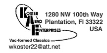
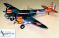
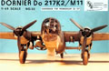

|  |
|
Koster Aero Enterprises does not maintain a website of their own so I
have made an effort to collect as much related information here as
possible. Below you will find construction and product reviews of some
of Bill Koster's conversion set and kits as well as current product
listing and pricing. If your local hobby shop does not carry KAE product
s you can always contact Bill Koster
directly at wkoster22@att.net
and he will be happy to set you up with product via direct shipment.
KAE Vac molds are of poured aluminum filled resin providing a long life
with consistent quality. |
This link will take you to a fairly large PDF file containing the current listing and pricing for all of the Koster Aero Enterprises product line. Here you will also find his decal listing and a mail-in order form. KAE Product List. One of the early KAE conversion kits, here we have the necessary parts to take the 1/48 Revell B-17F and make an early B-17C/D/E or even a late G model. Requiring a bit of surgery to make it happen here are the particulars of KAE #4. Bill Koster is well known within the modeling community for his well designed comversion kits and accessorie packages. He is also known for his work as a master engraver designing molds for many kits that are staples of the hard core modeler. In February of 2011 Koster Aero Enterprises released the newest addition to their already extensive line of goodies, the 1/48 B-17 E/F/G Nose Job. 03/17/2011 It seems slightly odd that we would have an American built reconnaissance bomber manufactured during the war years  that was not used by the United States Army Air Force but it’s true. This is the Martin Maryland 167 that lost out in competition to the Douglas A-20 Havoc but was picked up by the French and the British. Used as a reconnaissance bomber and high altitude spy plane take a look at the most recent release from Koster Aero Enterprises, the Martin Maryland 167. 1/29/06 This is a Monogram 1/48 scale B-24J that has been modified with Bill Koster's vacuform nose to represent a PB4Y-1 Navy bomber. The decals are custom made by Mike Grant Designs in Canada to represent the "Impatient Virgin". For a complete construction review of the model click here...PB4Y-1 Impatient Virgin And for those of you that just need to see that artwork up close....Impatient Virgin Close Up 1/8/03 When Dr. Scott Pedersen is not conducting research on Bats he can occasionally find time to build some really nice models. Here we can see what he has done with Bill Koster’s PB4Y-1 Nose Job for the Monogram B-24 PB4Y-1 Liberator. Dr. Scott Pedersen has performed major surgery this time with Bill Koster’s Privateer conversion to make this three time award winning model. Using just a few items from the original Monogram B-24 here is Scott’s Bomber in Blue, the PB4Y-2 Privateer. One thing is for certain; the Germans knew how to squeeze every possible ounce of usefulness out of a design.  The Do-217 series of aircraft saw service in a wide variety of roles
from conventional bomber to long range reconnaissance, shipping
interdiction and night fighter. The N variation was the last production
version of the 217 filling the role of night fighter and night bomber.
Here I will take a look at a conversion kit from Koster Aero Enterprises
for use with the Revell Do-217 E-5 and I’ll also take a look inside a
few other detail packages that will help take this conversion right over
the edge. Come with me and see just how far you can go with the DornierDo-217 J-2/N-1. 7/9/05
The Do-217 series of aircraft saw service in a wide variety of roles
from conventional bomber to long range reconnaissance, shipping
interdiction and night fighter. The N variation was the last production
version of the 217 filling the role of night fighter and night bomber.
Here I will take a look at a conversion kit from Koster Aero Enterprises
for use with the Revell Do-217 E-5 and I’ll also take a look inside a
few other detail packages that will help take this conversion right over
the edge. Come with me and see just how far you can go with the DornierDo-217 J-2/N-1. 7/9/05The Dornier Do-217 was a direct development of the Do-17, which first flew in 1934. The Do-217, a  versatile aircraft, appeared with a variety of power plants during its career between 1940 and 1944. The Reichs Luftfahrt Ministerium mindset was to take a good idea and develop it to its ultimate capability and the 217 is a fine example of that process. The “K” and “M” models received the distinguishing bulbous glazed nose and upgraded electronics packages specifically designed to deliver early cruise missiles or glide bombs. Designed to modify the Pro Modeler Do-217E this is the Koster Do-217 K-2/M-11 conversion kit. 7/25/04 I was so impressed with the Koster vacuform pieces that I immediately purchased a 1/48 Fw-200 Condor kit from Great Models Web Store.  This is another Bill Koster production. I've found this to be a very nice kit.
For a complete review of the kit in the box go here...Box Review This is another Bill Koster production. I've found this to be a very nice kit.
For a complete review of the kit in the box go here...Box ReviewFor a complete construction review of the model click here...Fw-200 Construction Review Page One or Take a shortcut to Page Two 9/2/03 The design requirements for this aircraft grew out of the perceived needs for bomber escort fighters during  the last days of the Second World War. Originally designated the F-88
Voodoo the aircraft experienced so many changes during development that
it was re-designated the F-101 Voodoo. Originally kitted in 1985 let’s
look at the current incarnation of Monogram’s 1/48 scale McDonnell F-101B ‘Voodoo’. Also includes a review of the Koster A/C conversion set. 8/4/07
the last days of the Second World War. Originally designated the F-88
Voodoo the aircraft experienced so many changes during development that
it was re-designated the F-101 Voodoo. Originally kitted in 1985 let’s
look at the current incarnation of Monogram’s 1/48 scale McDonnell F-101B ‘Voodoo’. Also includes a review of the Koster A/C conversion set. 8/4/07 There were no specific design requirements given for this aircraft in 1933 other than to have long range  and good performance. Mitsubishi produced a prototype that excited
Japanese Navel officers enough to request a fully developed attack
bomber which was in production by 1936 as the G3M1. After a few
modifications and engine improvements it became the G3M2 long range
bomber which the Allies code named ‘Nell’. New in 2006 from KAE, join me
in examining the 1/48 vacuformed multi-media Mitsubishi G3M2 ‘Nell’. 11/19/06
and good performance. Mitsubishi produced a prototype that excited
Japanese Navel officers enough to request a fully developed attack
bomber which was in production by 1936 as the G3M1. After a few
modifications and engine improvements it became the G3M2 long range
bomber which the Allies code named ‘Nell’. New in 2006 from KAE, join me
in examining the 1/48 vacuformed multi-media Mitsubishi G3M2 ‘Nell’. 11/19/06 |
|
|


{kind=link}
|